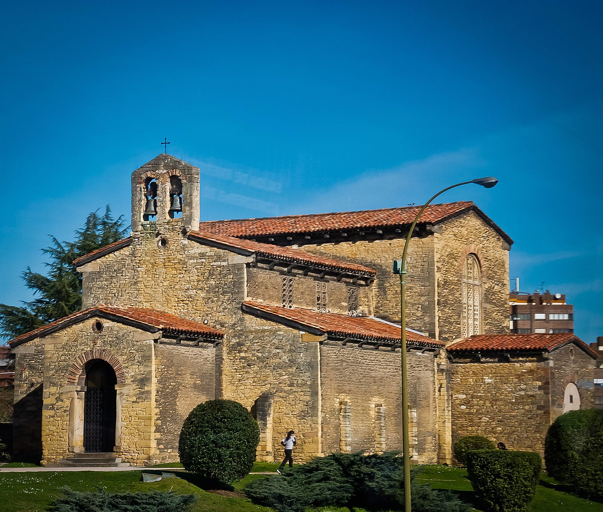
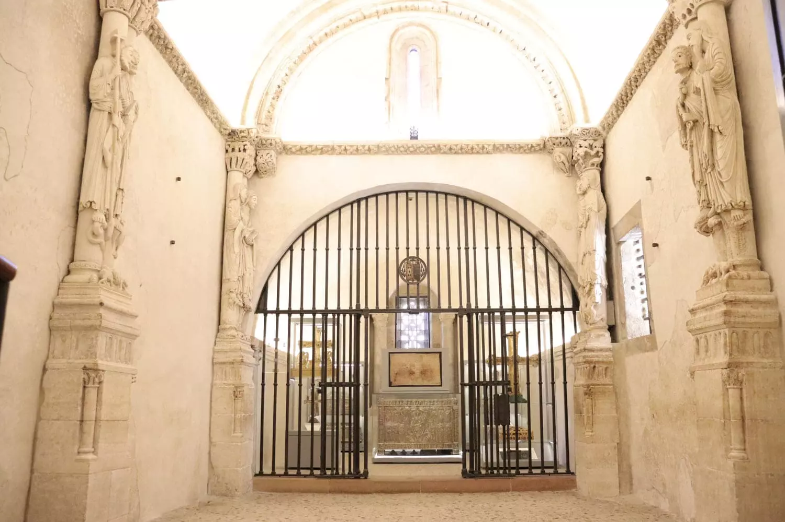
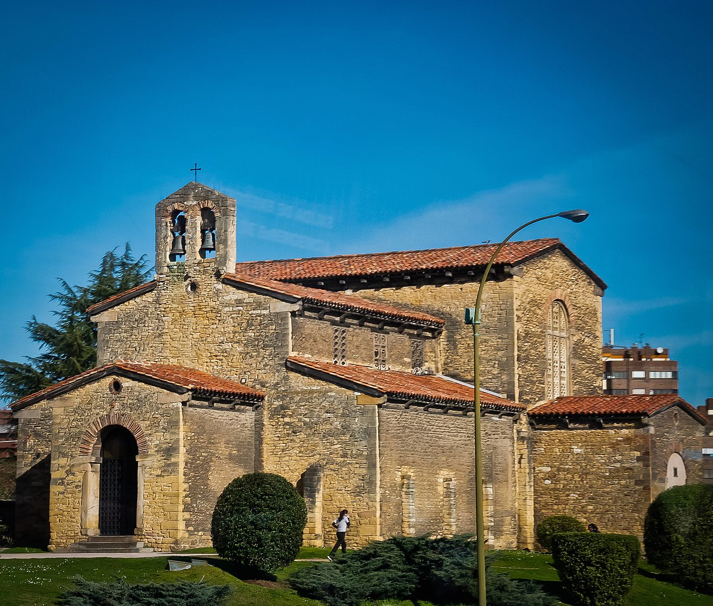
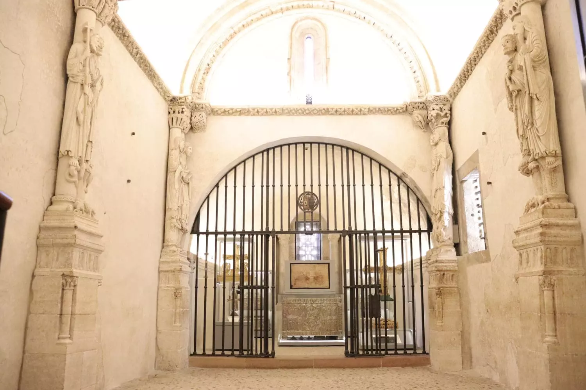

The Pre-Romanesque Monuments Route
The Pre-Romanesque Route in Oviedo will take you to some of Spain's most remarkable early medieval architecture.
This collection of monuments, built between the 8th and 10th centuries during the Kingdom of Asturias, was given
the title of UNESCO World Heritage Sites.
In the last part of the route, when visiting the Camara Santa, you will also see the Cathedral of San Salvador,
a roman catholic church from the 13th century, also a staple in Oviedo's turism.
The sites this route includes are:
- Santa María del Naranco: Originally build as a castle, later turned into a church.
- San Miguel de Lillo: Only a small part is intact.
- San Julián de los Prados (Santullano): Built in the early 9th century, inspired by early Christian art.
- Camara Santa (Holy Chamber)Located within the Oviedo Cathedral complex, this is a relic chamber with important religious artifacts, including the Arca Santa, a chest containing holy relics
 




A place for every interest
Cultural museums and theaters
You can read more about the history of these museum and theaters in our "Our Culture" section.
Oviedo has something for everybody, if your hobbies include art or theater, we recomend visiting the Fine Arts
museum or the few theaters in the city.
The Fine Arts Museum is located right next to the cathedral, and opens everyday 10am to 2.30pm, and
is free to enter.
It contains a broad permanent collection with artists like "El Greco", or Luis de Morales.
As well as ofter offering temporal expossitions with art pieces from other museums in the country.
In the El Campoamor theater, you can find many activities depending on the time of year:
- From December to February, you can find an offer in Operas every 2-3 days.
- Between the months of March to June, you will find a big catalog of dancing performances, mostly ballet, interpreted from local companies as well as international visitors.
- During the year, you will find performances of different Zarzuelas, which some may describe as a "Spanish opera", performed in spanish and by spanish actors and actresses.
For sports fans
Oviedo citizens, like most spanish people, are big fans of football. The official team, El Real Oviedo, has
its home in the stadium "Carlos Tartiere".
During the football season, you can find matches here ussually on Sundays.
Fans live it very passionately, especially when the match is against its rival, "El Sporting de Gijon",
this match is called "El Derby" and happens twice a year.
Iconic players like Santiago Cazorla or Diego Cervero have played in this field.
For non-football fans, one of the most exiciting museums to visit could be Fernando Alonso's Museum and Circuit.
This is a space dedicated to the life and career of the driver, showing his numerous awards and historic cars.
The museum has over 20 cars on display, as well as trophies and the first karts where Alonso got his start.
The ticket costs 30€ (752.94 Czech Koruna) and the doors are open every day from 10am to 7pm.
Along with the museum, there is a karting circuit designed by Alonso, where professional activities take place as well as entretainment.
Oviedo, gastronomic capital of 2024
This year, Oviedo was recognized as Spain's gastronomic capital, and rightfully so.
Four streets in the city form what is known as "La ruta de los vinos", or the "wine route", a perfect place to
have lunch, diner or just drink something while enjoying some "tapas". This streets are filled with small bars offering
spanish and asturian food.
As we can tell by the name, here the main focus is the wine, you can find more dedicated restaurants which will tell
you all the technical details of the wine you want to know, but also some more laid back bars with music and of course, asturian cider.
During weekends, this is one of the bussiest places in the city, people come have a drink or dinner here, before heading to some of the clubs just a few minutes away.
You can read more about our gastronomy in our "Our Culture" section.